THE VALLEY · V7
Siete escenas. La misma composición.
Sepia original a la izquierda; nueva versión a color a la derecha. Textos del banco con parámetros de ejemplo.
Verlas dentro de la crónicabirth · birth.named.daughter
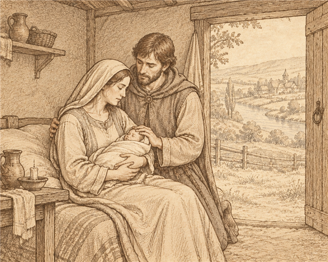
Edith had a daughter in the spring of year 50.
built · built.house
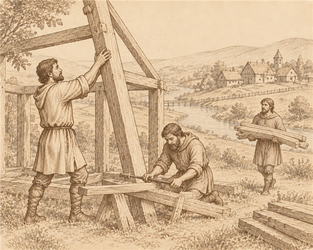
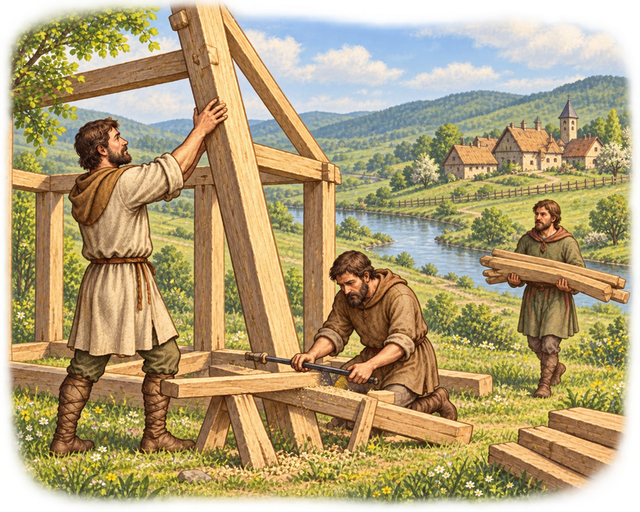
They raised a house in the spring of year 50.
pedlar · fate.pedlar
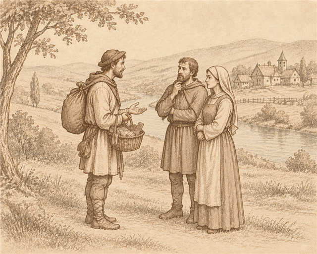
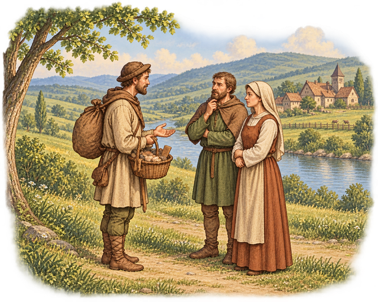
A pedlar came up the road in spring wanting timber: 20 wood for 8 silver.
wedding · fate.wedding
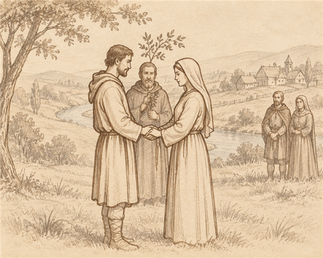
There was a wedding in the spring of year 50. The whole valley came.
fire · fate.lightning_fire
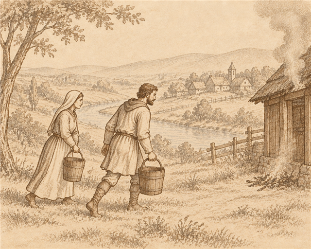
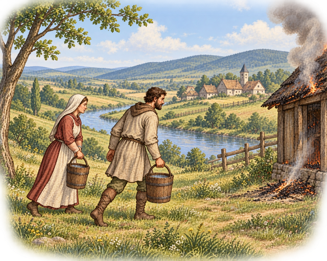
Lightning struck the house in the summer of year 50. It burned to the ground.
harvest · harvest.good
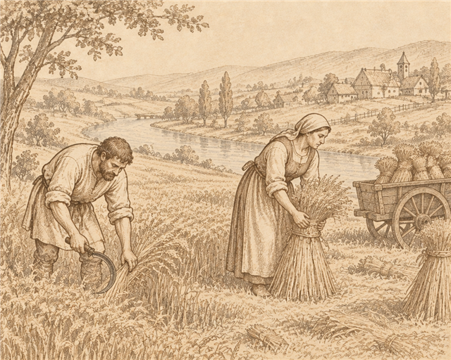
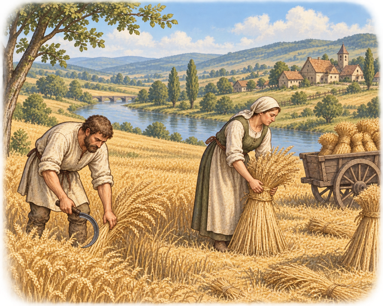
A good autumn. 120 bushels for 35 mouths.
death · death.old_age.named
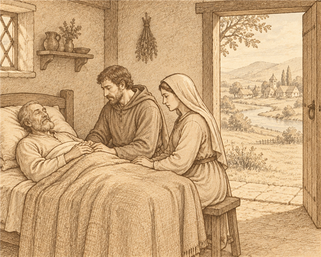
Thomas died in the autumn of year 50, 72 winters old.